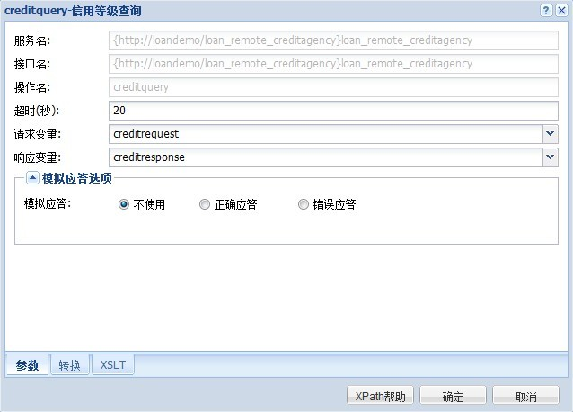
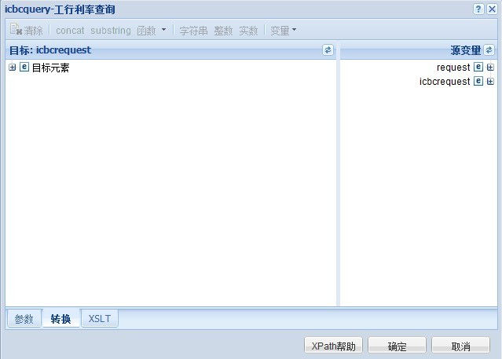
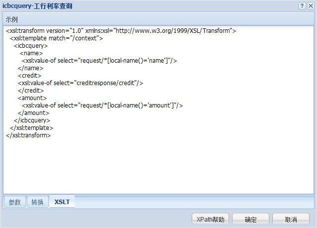
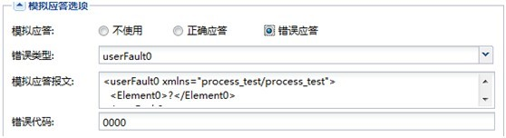
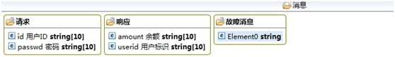
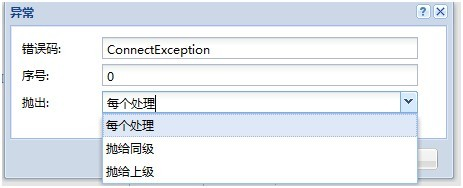

对外调用Action配置帮助文档
功能说明
调用其他已经定义好的流程服务 |
配置实例如下图所示

请求变量就是调用服务中的request，可以指定自己流程的某个变量，响应变量就是输出的XML报文了。 |
XSLT标签内形成的文档将实现把流程中的变量装进callout组件中去。 |
重组标签是形成xslt文档的一个有效协助。（但目前还不支持从xslt转化为可视化的形式。） |
只支持从可视化的方式转化为XSLT。标签顶部有各种的函数以及方法可用。
|

上图形成的xslt文档如下： |

如果有其他个性化需求可以在XSLT直接修改以达到目的。 |
模拟应答选项是为了黑盒测试而选择的，可以有正确应答，错误应答。 |

错误应答还依赖于消息界面上的故障消息 |

可以定义报文的格式。可以定义多个错误应答的故障信息。以便于调试。 |
配置项说明
| 配置项 |
描述 |
| 超时(秒) |
超时时间参数 |
| 请求变量 |
对外调用外部服务时发送的请求变量 |
| 响应变量 |
对外调用外部服务时接受的响应变量 |
Callout组件中的异常处理
| 异常处理是服务的健壮性以及连续性的重要保证，一个完整的服务应该把一些常见的异常做相应的处理并告知给用户。 |
尤其是遇见一些账务方面的问题，合理的冲正更是显得非常重要。右键单击callout组件可以添加异常处理模块。
|

打开异常处理的编辑页面可以看到 |
异常捕获的错误码，就是对外服务返回的状态码，反映交易是否成功,如果失败会返回错误码.(一般在./stream/errcode字段)异常就是根据这个错误码来捕获的。 |
抛出给不同的级别可以根据冲正的需要来选择。例如此组件发生异常，需要和上级一起冲正就选择抛给上级。 |
超时处理其实是一种特殊的异常处理。错误码是timeout。 |